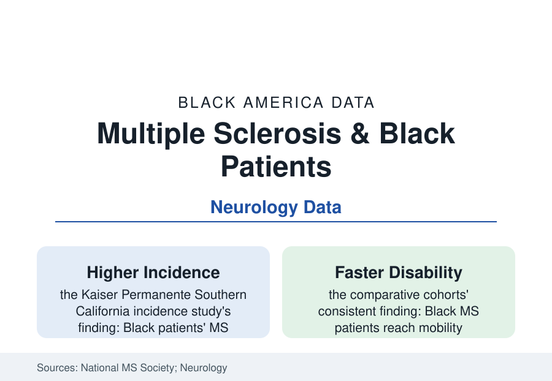

Black Public Health
Multiple Sclerosis in Black Americans: The Disease Medicine Said They Didn't Get
MS was long taught as a white woman's disease. Modern incidence studies find Black Americans develop it at comparable or higher rates — with a harder course. The data.

Multiple sclerosis spent a century in the textbooks as a disease of northern-European ancestry — a 'white woman's disease' whose teaching cases, diagnostic instincts, and research cohorts all assumed the patient. The ascertainment revolution of the last fifteen years corrected the record the hard way: when a large integrated health system counted new MS cases in its own diverse membership (the Kaiser Permanente Southern California incidence study), Black patients' incidence came back higher than white patients' — and the follow-up literature has been rebuilding the disease's demographics ever since, finding along the way that Black patients' MS runs, on average, a more aggressive course with less of the system's attention. This article reports the rebuilt file.
Incidence and Prevalence: The Corrected Count
The national prevalence (the MS Society's funded estimate puts total U.S. cases near a million, roughly double the old textbook figure — the counting revolution applied to everyone) distributes across races in the current studies with Black Americans holding a share of cases that approaches their population share — the Kaiser incidence rates (Black women in particular recording the highest incidence of any group in that study's years) standing against the older clinic-based series whose 'rarity' was the access funnel's signature once more: MS diagnosis requires MRI access, neurology referral, and a clinician whose pattern-recognition includes you — three gates this section has priced before. The geographic myth went with the racial one: the latitude gradient (MS rising with distance from the equator in the old epidemiology) had consigned the South's Black Belt to low theoretical risk, while the VA's and the modern registries' data record Southern Black patients in full proportion — the vitamin-D and ancestry hypotheses of the current research literature proceeding, now, with the population actually in the cohort.
The Course: More Inflammation, Faster Milestones
The comparative-course data are the file's hard center: across the registry and clinic cohorts (the New York State MS Consortium, the academic center series, the VA's MS centers), Black patients show higher rates of the aggressive features — more frequent relapses in several series, greater MRI lesion burden and brain-volume loss rates in the imaging studies, more optic-spinal presentations, and faster arrival at the disability milestones (the cane and wheelchair endpoints reached years sooner in the adjusted analyses) — with the mortality data (MS listed on Black patients' death certificates at rates the CDC series now records converging with white rates) behind them. The mechanism literature debates the shares (disease biology, later diagnosis in the Parkinson's pattern, comorbidity load — the hypertension and diabetes files stacking onto neurological disability — and treatment intensity all in the models), and the treatment data record their piece: Black patients in the claims analyses receive the high-efficacy disease-modifying therapies — the infusions and monoclonals that changed MS prognosis — at lower rates and later than white patients, with the older injectable platform therapies' pattern reversed, an intensity gradient legible in the pharmacy data whatever its causes.
Research, Representation, and the Patient Community
The research record is the file's thinnest layer: Black participants at roughly two to five percent of the pivotal MS trial populations in the published enrollment audits — the genomic and biomarker science of the precision era calibrated accordingly — with the corrective cohorts (the academic centers' Black MS registries, the community-based studies) a recent construction. The patient-community infrastructure tells the access story in organizational form: the MS Society's chapter network historically thinner in Black neighborhoods, answered in the current era by Black-led MS organizations and support communities built explicitly because the mainstream rooms did not hold the patients the incidence data said existed — the pattern, by now familiar in this section, of the community building the institution the data demanded. The clinical-recognition fix is the literature's own prescription: MS in the neurology curriculum's case library diversified, the diagnostic criteria's application audited (the McDonald criteria's performance across populations a live methods question), and the Southern and community-hospital neurology capacity — the referral tier where the late diagnoses begin — resourced to see the patients the textbooks missed.
Reading the MS Data
A disease reclassified within a professional generation from 'not theirs' to 'theirs, harder': multiple sclerosis is the health file's demonstration that epidemiology's maps are drawn by whoever gets diagnosed, and redrawn when someone finally counts the waiting rooms honestly. The incidence study that overturned the textbook did nothing exotic. It counted a health system's own members, all of them, carefully. The patients had been there the whole time — which is this section's entire thesis, arriving by yet another road.
More in Black Public Health
Hypertension Among Black Adults: Prevalence, Control, and Consequences
About 55 percent of Black adults have hypertension — the highest rate of any U.S. group. Prevalence, onset, control, and the stroke, heart, and kidney consequences in the data.
Diabetes Among Black Adults: Prevalence and Complications
Nearly one in five Black adults has diabetes, diagnosed or undiagnosed — and its complications fall with particular weight. The CDC data on prevalence, control, and outcomes.
Black Life Expectancy: The Gap at Birth and Its Causes
Black life expectancy at birth is about 73 years, roughly five years below the national figure — the summary measure of every health gap in this section. The CDC data.
Source: National Multiple Sclerosis Society; Kaiser Permanente incidence studies; National Institute of Neurological Disorders and Stroke; VA Multiple Sclerosis Centers of Excellence; Neurology journal literature.